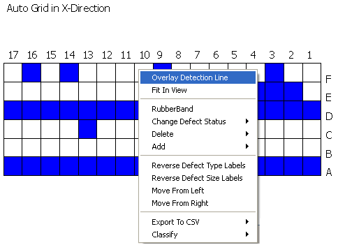
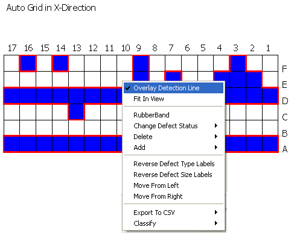

Overlaying a
detection line helps in distinguishing Real defects from Non-Real
defects shown in the grid. Non-Real defects are not enclosed by
the overlaid detection line.
Procedure
- Right-click in the detection
line graph. A menu appears.
Figure 1. Right-Click Menu Items
for Detection Line Graph
- Click Overlay Detection Line. The
line of detection is computed from the grid detected on the reference
inspection or from the must catch defects file.
- The detection line is overlaid
in red. The option is shown as checked in the menu as shown in Figure 2.
Figure 2. Overlay Detection Line
- To hide the overlay, click
the checked Overlay Detection Line.